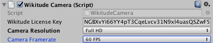

Camera Controls
The WikitudeCamera also provides APIs to change the settings on the device camera.
The first category of settings are visible and editable directly in the inspector of the WikitudeCamera, while the second category can only be changed through scripting. Please also see the Camera Controls - Camera Settings scene for an example on how to use them.
Inspector Settings

Camera Resolution
The Camera Resolution setting indicates which resolution you would like to use. Available options are SD, HD and FullHD. If the desired resolution is not available, the closest available resolution will be used instead. You can also select Auto and the SDK will select a resolution based on the capabilities of the device.
Camera Framerate
The Camera Framerate setting allows you to select between 30 FPS and 60 FPS. If 60 FPS is selected, but the device doesn't support it, 30 FPS will be used instead. You can also select Auto and the SDK will select a framerate based on the capabilities of the device.
Enable Camera Rendering
By default, the WikitudeCamera script will render the camera frames in the background of your scene. By disabling this option, the Wikitude SDK will stop doing any kind of rendering. This also means that the WikitudeCamera script doesn't need a camera component to be attached to the same GameObject.
Static Camera
By default, the WikitudeCamera script will move its GameObject in world space to correspond what the real camera is seeing. When the Static Camera option is enabled, the WikitudeCamera GameObject will never move and all the trackables will be moved relative to the camera instead. Additionally, you can move the WikitudeCamera GameObject yourself and the trackables will follow it accordingly.
Script Only Settings
Camera position
The DevicePosition property enables you to change between the back and front camera of the device.
Focus Mode
The FocusMode property can change the camera focus mode between Locked, which will keep the current focus, Once, which will try to focus the camera only once and Continuous which will constantly adapt the focus of the camera to changes in the view.
Manual Focus
The ManualFocus property allows the focal length to be set at a custom distance when the FocusMode is set to Locked. The property accepts values from 0 to 1, where 0 means focusing the camera as close as possible.
Flash Mode
The FlashMode property allows you to turn on the camera flash.
Zoom Level
The ZoomLevel property changes the zoom level used by the camera. Valid values are between 1.0 and MaxZoomLevel. Be sure tu query the MaxZoomLevel property first. A MaxZoomLevel value of 1.0 indicates that the device doesn't support zooming.
Auto Focus Restriction (iOS only)
The AutoFocusRestriction property let's you restrict the auto focus on the camera to either Near or Far. By default it is not restricted.
Ignore Trackable Scale
When the IgnoreTrackableScale property is enabled, the camera ignores the scaling of the trackable for tracking purposes and assumes it to be 1.0f.
When doing a TransformOverride that also changes the scale of the trackables, this should be set to true.
Transform Override
The ActiveOverride allows a custom TransformOverride to be applied before any Transform changes are made to the WikitudeCamera or any Trackables.